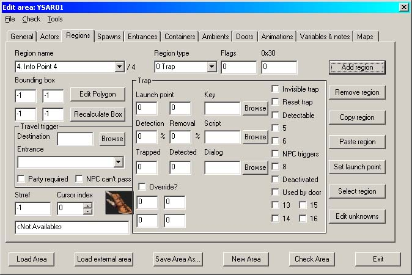
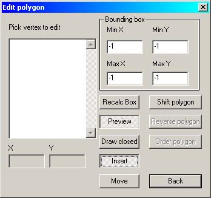
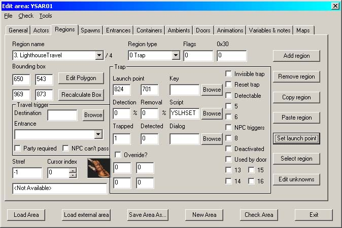
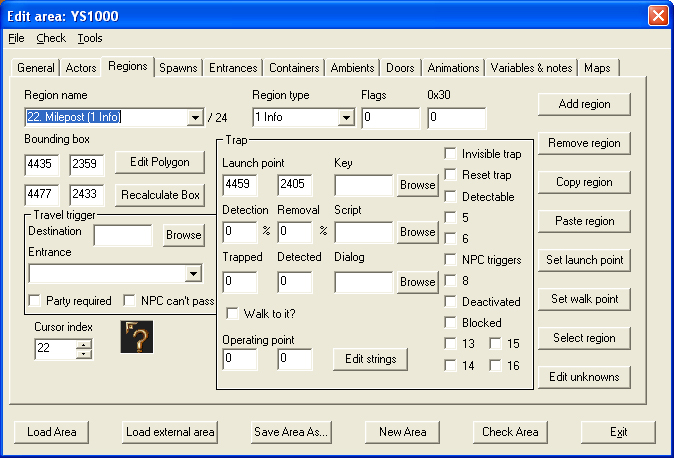
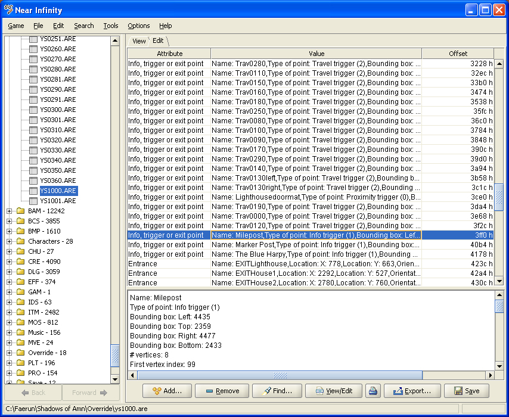
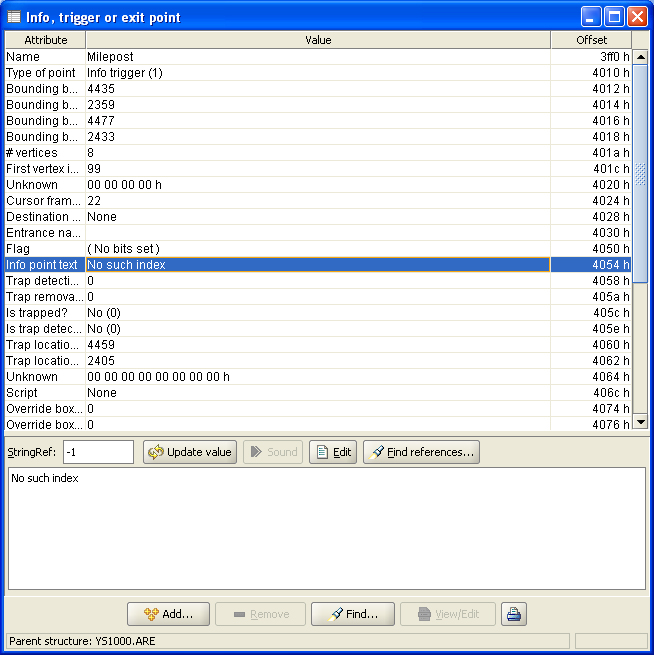
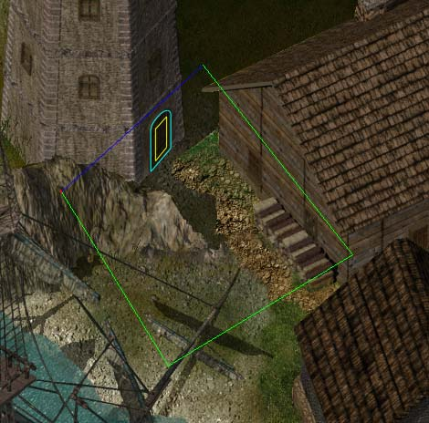
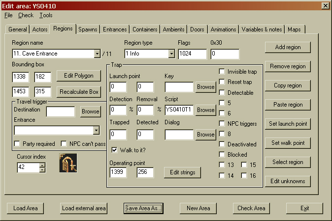
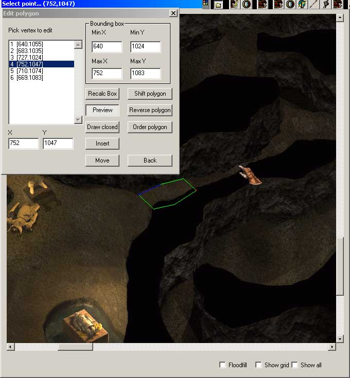
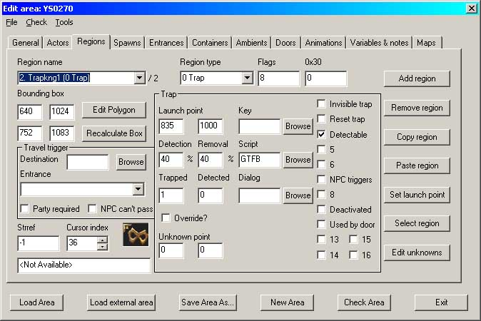

| Version History |
| Introduction |
| Proximity Triggers |
| Info Points |
| InfoTrappery |
| Traps of the Common Type |
Version History
1.0 Initial release 1.1 'Traps of the Common Type' added 1.2 Variables note added to 'Traps of the Common Type' 2.0 'Info Points' updated with Weidu offset information for the info point description 2.1 'Info Points' updated with the 'Walk to' information
Introduction
This tutorial will teach you how to create info points, proximity triggers and traps. Although DLTCEP refers to info points and 'traps' only, I believe that a far better general description is 'proximity trigger', simply because this type of trigger is used for all sorts of other things as well as setting off traps. This is why I have mentioned both 'traps' and 'proximity triggers' in the initial sentence.
We are in an un-named seatown somewhere on the Sword Coast.
I have no idea where you will be creating your mod, so I am going to assume that all of the relevant files are in your \bg2\override directory.
Unless you've changed your browser fonts to something weird and wonderful, the conventions in this tutorial are that Times New Roman is ‘descriptive’ text and Arial Bold is ‘action’ text. Alternatively, black is descriptive and blue is action.
| Info Points |
| InfoTrappery |
| Traps of the Common Type |
This is without doubt the easiest form of 'trap' to create. A good example of the proximity trigger is in the Graveyard District of Athkatla where as you approach the open grave in the top left corner, the game starts giving you information messages about noises issuing from the ground. This is done simply by checking if a player is within a bounded area and if they are, it triggers a script.
Start DLTCEP if it's not already running.
|
 Image 1 - Add Region |
The default for Region Type is Trap, so no change here.
This launches the Polygon Editor
|
 Image 2 - The Polygon Editor |
Your map area should now be visible. Scroll to where you wish to place the proximity trigger and draw the trigger area outline.
|
Image 3 - The Proximity Box |
Think about what you are going to be using the proximity trigger for; in this case I had to be sure that a party of six characters would be able to occupy the proximity box all at the same time.
If you are not happy with the size or shape of the polygon, go back the Edit Polygon screen and
The Polygon Editor is now in Modify mode. Click on anyone of the listed vertices and you will see it light up in the Preview screen as a red dot. When you've identified the one that you are not happy with, click on the screen at the place you would like that vertex to be and DLTCEP will move it for you. When you are satisfied,
to return to the Regions tab. Although this is a proximity trigger, we now need to set the trap launch point simply because it is required.
Select a point somewhere in the centre of the box and
The editor will automatically return to the Regions tab. Save it! To finish the proximity trigger off, we need to set the Trapped box to 1 and assign a script - what the script does is entirely up to you. Remember that the script will be permanently running from the time you enter the area to the time you leave.
|
 Image 4 - The completed Proximity Trigger |
Note that the screen title has suddenly changed from '4. Info Point 4' to '3. LighthouseTravel'...oops. I should have warned you abaout that - highlight the Region Name and enter a script reference name without a preceeding number; DLTCEP will automatically add that.
| Proximity Triggers |
| InfoTrappery |
| Traps of the Common Type |
Info points are created in a similar fashion to Proximity Triggers, with the exception that they require a string reference to display and a cursor to mark the display area. If you use Image 5 as a guide, you should be able to work your way towards an info point by using the proximity trigger instructions above.
|
 Image 5 - A completed Info Point |
If you enter a new dialog string for info point information, DLTCEP will ask you if you wish to update dialog.tlk? I don't advise entering a new string because I'm assuming that you will be using Weidu to distribute your mod and the relevant string can be tied in during installation. If the mod is just for you then go ahead and add the string to dialog.tlk. Alternatively, you can use an existing strref; use DLTCEP's Search feature to locate a usable one. As I'm using Weidu, both of these boxes were left to default. However, to create the description string in your Weidu .tp2 file, you need to know the offset of the info point. To find this you need a copy of Near Infinity.
I have highlighted the same info point as is shown in Image 5 above.
|
 Image 6 - The Info Point in NI |
The trigger editor will open.
|
 Image 7 - The Hex Offset |
You now have sufficient information to create the info point description in your .tp2 file. Again, though, we have another gotcha but this time it is to do with Weidu. Weidu patches the last file copied, so if your mod is copying in a large number of areas you need to differentiate those that are patched. I kept mine in another folder, which is probably the easiest way to do it. Finally then, the entry in the .tp2 file - I know; this is supposed to be about DLTCEP and not Weidu. This is where you make use of that hex offset.
| COPY ~dq/areas/porthpentyrch/ys1000/.~ ~override/.~ |
| SAY 0x4054 ~A Coast Way marker post. It says 'West to Porthpentyrch; North to Athkatla; East to Trademeet'~ |
Job done.
| Proximity Triggers |
| Info Points |
| Traps of the Common Type |
Travel Regions only allow you to travel to a single area. Door Scripts do not allow a second click to register when they are open. I needed to select multiple travel areas based on a global flag and the Infinity Engine was not going to co-operate. Seven hours (!!!) of testing later, I discovered how to sneak up on it from behind and make it do things it didn't want to do....
It needed a door with no script (see 'Adding Doors' tutorial), a proximity trigger and an info point. If you've ever created an area in IETME and then opened it in DLTCEP, the first thing you get is a message saying 'Re-ordered to official standard'. I made use of a combination of the way the Infinity Engine works and the 'official' ordering of the .are file.
The Infinity Engine reads the area file in the following order:
The highest items in the list are of the least precedence and the lowest items are the highest precedence; in our case, a closed door is of higher precedence than an info trigger and so it covers it in the game. The info point is only exposed and usable when the door is opened and no longer occupies the same area as the info point. Once the info point is exposed, it can be clicked on and any associated qualified script will run.
That in itself was not enough to get the party to change areas. Had I have simply used the info point script to run the
ActionOverride(Player1,LeaveAreaLUA("ysar02","",[220.300],10))
commands to move the party, then the characters would have been yanked from wherever they were on the map. Not very nice... so I needed to gather them together in one area before triggering the LUA command. You're about to find out why that proximity trigger above is just quite so big.
I used the info point to run a script (yslhse.bcs) that moved all of the party towards the door. Bear in mind here that this script assumes a party of six - it is only a test script and needs expanding for parties with fewer members.
IF Clicked([ANYONE]) THEN RESPONSE #100 ActionOverride(Player1,MoveToObject("Lighthouse")) //Lighthouse is the name of the door ActionOverride(Player2,MoveToObject("Lighthouse")) ActionOverride(Player3,MoveToObject("Lighthouse")) ActionOverride(Player4,MoveToObject("Lighthouse")) ActionOverride(Player5,MoveToObject("Lighthouse")) ActionOverride(Player6,MoveToObject("Lighthouse")) SetGlobal("dai_LightHouseTravelTrap","GLOBAL",1) //Prime the proximity trigger END
This starts everyone moving towards the door but allows the script to be interrupted in case of attack or new movement command etc. At some point the entire party will occupy that enormous proximity trigger and the proximity script (yslhset.bcs) will then fire the movement command. If the proximity trigger has not been primed by the door info point then the party can walk across it till the cows come home and nothing will happen.
IF IsOverMe(Player1) //All characters are in my proximity box IsOverMe(Player2) IsOverMe(Player3) IsOverMe(Player4) IsOverMe(Player5) IsOverMe(Player6) Global("dai_LightHouseTravelTrap","GLOBAL",1) //I've been primed Global("dai_PorthpentyrchRestored","GLOBAL",0) //Flag to control the area to move to THEN RESPONSE #100 SetGlobal("dai_LightHouseTravelTrap","GLOBAL",0) //Reset the primer ActionOverride(Player1,LeaveAreaLUA("ysar02","",[220.300],10)) //and move the party to the required area ActionOverride(Player2,LeaveAreaLUA("ysar02","",[240.300],10)) ActionOverride(Player3,LeaveAreaLUA("ysar02","",[220.320],10)) ActionOverride(Player4,LeaveAreaLUA("ysar02","",[240.320],10)) ActionOverride(Player5,LeaveAreaLUA("ysar02","",[220.340],10)) ActionOverride(Player6,LeaveAreaLUA("ysar02","",[240.340],10)) END
And that's it - how to make the Infinity Engine send a six-member party to a flag-selected area. Both of these scripts are going to need working on to allow for parties of less than six characters and they also need a timeout-reset in case the player changes their mind about using the door, but they proved that what I wanted could be done.
|
 Image 8 - Composite image showing the info point (yellow), door (cyan) and proximity trigger (green/blue) |
Since I wrote the above, IESDP and DLTCEP have moved on and more information has been uncovered. There is now an easier way to make your party walk to an information point or trap but I'm leaving the above description in place because the actions there may be of greater use in some situations than the 'quick' method I'm about to detail.
When your info point has been laid out,
box on the lower part of the screen. This in itself won't make the party move (apart from a quick shake on the spot); you also need to define where they walk to.
Done. Clicking in this area will now make the party walk to it automatically.
|
 Image 11 - Setting the 'Walk to' information |
| Proximity Triggers |
| Info Points |
| InfoTrappery |
| Traps of the Common Type |
There isn't much difference between this and a Proximity Trigger, but I'll go through it from scratch anyway.
|
Image 10 - Add Region |
The default for Region Type is Trap, so no change here.
This launches the Polygon Editor.
|
Image 11 - The Polygon Editor |
Your map area should now be visible. Scroll to where you wish to place the trap and draw the trigger area outline.
If you are not happy with the size or shape of the polygon, go back the Edit Polygon screen and
The Polygon Editor is now in Modify mode. Click on anyone of the listed vertices and you will see it light up in the Preview screen as a red dot. When you've identified the one that you are not happy with, click on the screen at the place you would like that vertex to be and DLTCEP will move it for you. When you are satisfied,
to return to the Regions tab. We now need to set the trap launch point - this is the radius within which the trap can be detected; this explains why you sometimes get the odd time in the game where the thief detects a hidden door on the other side of a thick wall. The D'Arnise Hold is particularly good (bad?) for this.
Click to set the radius distance from the trap.
|
 Image 12 - Composite image showing the Polygon Editor, the Trap outline and the range of the Launch Point |
The editor will automatically return to the Regions tab. Save it! Of the other options, you must set the Trapped box to 1 and assign a script. It is the script that does the damage: using DLTCEP check all of the .bcs scripts starting with the letters GT - these are the trap scripts in the game. Set the other options as you require but to complete a simple, fire-once-only trap, check the Detectable box and leave it at that.
|
 Image 13 - The completed Trap screen |
There is a real 'gotcha' with scripting traps and it took me a few too many hours to figure it out. Local variables do not work with traps - they all have to be global e.g.
//This doesn't work IF Entered([ANYONE]) Global("ys_SetTrap","LOCALS",0) THEN RESPONSE #100 DisplayString(LastTrigger,14381) // Trap Sprung SetGlobal("ys_SetTrap","LOCALS",1) END
//But this does IF Entered([ANYONE]) Global("ys_SetTrap","GLOBAL",0) THEN RESPONSE #100 DisplayString(LastTrigger,14381) // Trap Sprung SetGlobal("ys_SetTrap","GLOBAL",1) END
Don't ask - another Infinity Engine funny.
The current selected script - GTFB.bcs - sets off a fireball if the trap is triggered. Trap scripts are amongst the simplest in the game: this one checks to see if anyone has walked into the proximity region and if they have, it fires off a fireball.
IF Entered([ANYONE]) THEN RESPONSE #100 DisplayString(LastTrigger,14381) // Trap Sprung ForceSpell(LastTrigger,TRAP_FIREBALL) END
Simple really..... check the Reset Trap box if you want to catch anyone else following along behind. If you want to get really nasty and set off multiple fireballs, try this:
IF Entered([ANYONE]) THEN RESPONSE #100 DisplayString(LastTrigger,14381) // Trap Sprung ForceSpell(LastTrigger,TRAP_FIREBALL) Wait(2) ForceSpell(LastTrigger,TRAP_FIREBALL) Wait(2) ForceSpell(LastTrigger,TRAP_FIREBALL) Wait(2) ForceSpell(LastTrigger,TRAP_FIREBALL) Wait(2) ForceSpell(LastTrigger,TRAP_FIREBALL) Wait(2) ForceSpell(LastTrigger,TRAP_FIREBALL) Wait(2) END
That should really make somebody hate you.
|
Tutorial written by Yovaneth, apprentic’d at Candlekeep during the Bhaalspawn Troubles. Post it where you will but please don’t take credit for what you have not written. |